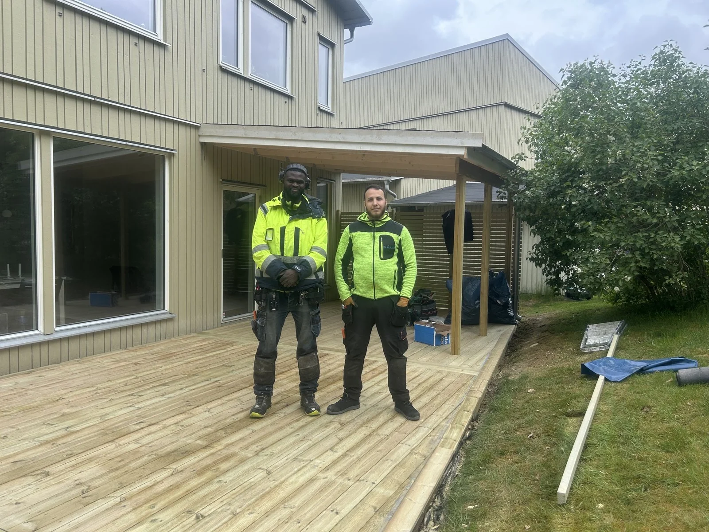

OM MAJEK
Vi gillar att se
idéer bli verklighet.
Vi är Majek Bygg & Entreprenad. Från Kungälv hjälper vi kunder i Göteborgsregionen med renoveringar, snickeri och byggprojekt.

En nära kontakt.
Ett ordentligt arbete.
Det ska vara enkelt att prata med den som bygger.
Vi vill att du ska känna dig delaktig i arbetet. Därför lägger vi tid på att förstå vad du behöver, svara på frågor och vara tydliga med hur vi planerar att genomföra projektet.
Vi arbetar med entreprenad och byggservice åt privatpersoner och fastighetsägare. Som underentreprenör hjälper vi också andra byggföretag med snickeri och byggmoment.
SÅ ARBETAR VI
En bra början
gör skillnad.
Vi lyssnar och tar fram ett förslag
Du berättar om dina behov. Vi går igenom projektets förutsättningar och föreslår ett upplägg som passar arbetet.
Du vet vad vi kommit överens om
Avtal, omfattning och kostnadsbild ska vara tydliga innan vi börjar. Vi arbetar med öppna kalkyler.
Vi håller kontakten under arbetet
Du får löpande information. Om förutsättningarna ändras tar vi upp det med dig och diskuterar nästa steg.
Ordning, material och detaljer
En välorganiserad arbetsplats och noggranna materialval är en del av arbetet. Vi utgår från AMA:s principer för byggbeskrivningar och material.
MÄNNISKORNA BAKOM MAJEK
Prata med oss.
Jimmy Linder
076 234 99 72jimmy.linder@majek.seVI BÖRJAR MED ETT SAMTAL
Vad vill du
bygga om?
Ett nytt kök, en större altan eller ett helt byggprojekt.
Berätta vad du har i tankarna.